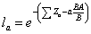
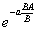
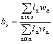
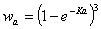
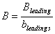

See Edit groups for instructions on defining multi-stanza groups in EwE 6.0. See Edit multi-stanza groups for instructions on setting parameters for multi-stanza groups.
EwE users can create a set of biomass groups representing life history stages or stanzas for species that have complex trophic ontogeny. Mortality rates (M0, predation, fishing) and diet composition are assumed to be similar for individuals within each stanza (e.g. larvae having high mortality and feed on zooplankton, juveniles having lower mortality and feed on benthic insects, adults having still lower mortality and feed on fish). Users of this feature must enter baseline estimates of total mortality rate Z and diet composition for each stanza, then biomass, QB, and BA for one “leading” stanza only.
For Ecopath mass balance calculations, the total mortality rate Z entered for each stanza-group is used to replace the Ecopath P/B for that group. That is, the Ecopath master equation is interpreted as mass balance accounting for the mortality rate for the group (EE x Z = sum of predation mortality rates, EE, calculated for the group). Further, the B and Q/B for all stanza-groups besides the leading (entry) stanza are calculated before entry to Ecopath, using the assumptions that:
(1) body growth for the species as a whole follows a von Bertalanffy growth curve with weight proportional to length-cubed; and
(2) the species population as a whole has had relatively stable mortality and relative recruitment rate for at least a few years, and so has reached a stable age-size distribution.
Under the stable age distribution assumption, the relative number of age “a” animals is given by la/Sla where the sum is over all ages, and la is the population growth rate-corrected survivorship,

where the sum of Z’s is over all ages up to “a” and the BA/B term represents effect on the numbers at age of the population growth rate (e.g. the cohort born one year ago should be smaller by the factor

than the cohort born “a” years ago, if the relative population growth rate has been BA/B) for at least “a” years). Further, the relative biomass, b, of animals in stanza s should be

where

is the von Bertalanffy (1938) prediction of relative body weight at age a.Knowing the biomass, B, for one leading stanza, and the bs for each stanza s, the biomasses for the other stanzas can be calculated by first calculating population biomass

,then setting Bs = bsB for the other stanzas. Q/B estimates for non-leading stanzas are calculated with a similar approach, assuming that feeding rates vary with age as the 2/3 power of body weight (a “hidden” assumption in the von Bertalanffy growth model). This method for ‘extending’ biomass and Q/B estimates over stanzas avoids a problem encountered in earlier ‘split-group’ EwE representations, where users could enter juvenile biomasses and feeding rates quite inconsistent with the adult biomasses and feeding rates that they had entered. The internal calculations of survivorship and biomass are actually done in monthly age steps, so as to allow finer resolution than one year in the stanza biomass and mortality structure (e.g., larval and juvenile stanzas that last only one or a few months).
On entry to Ecosim from Ecopath, the stanza age-size distribution information (la, wa) is passed along and is used to initialize a fully size-age structured simulation for the multi-stanza populations. That is, for each monthly time step in Ecosim, numbers at monthly ages Na,t and body weights wa,t are updated for ages up to the 90% maximum body weight age (older, slow growing animals are accounted in an ‘accumulator’ age group). The body growth wa,t calculations are parameterized so as to follow von Bertalanffy growth curves, with growth rates dependent on body size and (size- and time-varying) food consumption rates. Fecundity is assumed proportional to body weight above a weight at maturity, and size-numbers dependent monthly egg production is used to predict changes in recruitment rates of age 0 fish. Compensatory juvenile mortality is represented through changes in Z for juvenile stanzas associated with changes in foraging time and predator abundances. Egg production is allowed to vary seasonally or over long-term through a user-defined forcing function (see Egg production). If an egg production curve is defined the egg production term is multiplied according to the user-defined function.
In Ecospace, it is not practical to dynamically update the full multi-stanza age structures for every spatial cell (computer time and memory limits). The multi-stanza dynamics are retained, but the population numbers at age are assumed to remain close to equilibrium (changes in numbers at age associated with changes in mortality rates, foraging times, etc. are assumed to ‘immediately’ move the numbers-at-age composition to a new equilibrium). In practice, we have found that this moving-equilibrium representation of population numbers generally gives results quite close to those obtained when full age-size accounting is done dynamically, provided feeding and mortality rates do not change too rapidly. This is similar to the general finding with Ecospace that time predictions of overall abundance change are quite similar to those obtained with Ecosim, despite how the “dynamic” calculation in Ecospace is really just a stepwise movement toward predicted spatial equilibrium values for all variables.
Here are a few implementation issues that users of the multi-stanza capability should consider:
How many stanzas? The main computational burden of the full representation is in Ecosim, and this burden depends on the number of age classes accounted (calculated from K, Z for adult stanza) rather than the number of stanzas with distinct mortality/feeding patterns within the age structure. So the best advice we can give is to err on the high side. Add stanzas for each major ontogenetic shift in habitat use and diet (though larval stages can often be ignored due to low biomass, low impact on prey, and unlikely to show density-dependent effects). If necessary additional stanzas for size-age ranges that are subject to selective fishing impacts that might cause growth overfishing under some policy scenarios (growth overfishing can be a problem whenever juvenile fish are harvested over age ranges where they display accelerating growth in body weight, so cohort biomass is still increasing over the age range being fished).
Representation of seasonality? It is common for early juvenile stanzas to be completed within a short season each year. Yet Ecopath mass balance is based on annual average mass transfers. The initialization described above is based on “spreading” the seasonal effects evenly over the annual cycle (in monthly steps), and in practice this does not cause serious problems for the mass-balance calculation/Ecopath estimation. On entry to Ecosim, users can specify seasonal recruitment patterns and represent seasonal interaction dynamics in detail, but this generally forces care in all aspects of seasonality, (e.g., in prey productivity and availability as well as juvenile abundance). Generally we find that these more detailed calculations give about the same long term population dynamics as when recruitment is treated as aseasonal, except in scenarios that involve match-mismatch variation from year to year in the timing of food availability relative to the timing of recruitment (so unless you specifically want to examine match-mismatch hypotheses, consider not bothering to include seasonality in the simulations).
Representation of stanzas that occur outside the modeled system? It is common, especially in models for coastal ecosystems, to have species that spend only part (or none) of their time in the system. For example, juvenile rearing may be in the modeled ecosystem, but adult foraging and harvest impacts may occur in outside areas. The preferred way to handle trophic/fishery impacts for such species in EwE is to treat part (or all) of the diet for outside-migrant stanzas as imported, rather than to model the movement into and out of the system as immigration/emigration rates. With the diet import convention, EwE will still handle overall fishery impacts at the population scale whether or not these impacts occur within the modeled system; all that will be “lost’ is dynamic change in food availability (and feeding rates) and predation mortality of organisms during times when they are outside the modeled system (outside world treated as having constant trophic conditions). Most often, the stanzas that reside outside the modeled system are older fish, for which the assumption of constant resource availability and natural mortality risk may be quite reasonable. When it appears that using the diet-import convention is inappropriate due to changing trophic conditions outside the modeled system, then the modeled system should be extended to include the ‘outside’ trophic interactions of concern.
The multi-stanza representation is quite flexible, and users may find other ways to use it for effectively representing ‘problem processes’ in ecological systems. Such findings can be reported to www.ecopath.org for use by others.